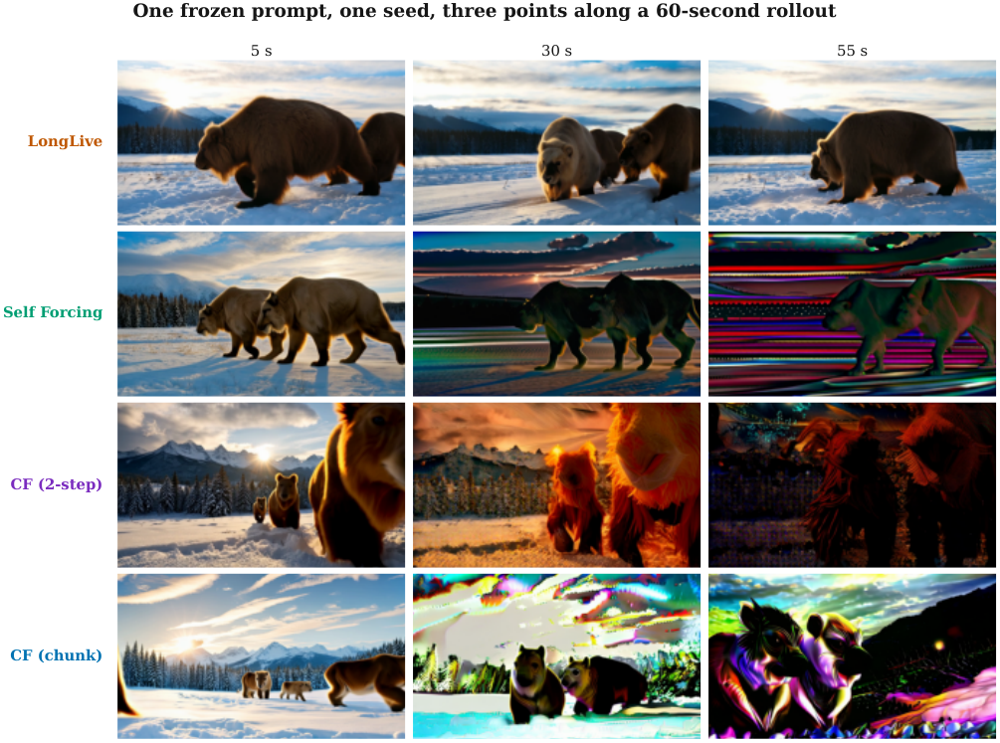
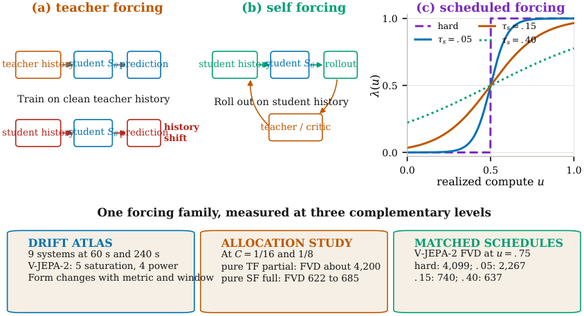
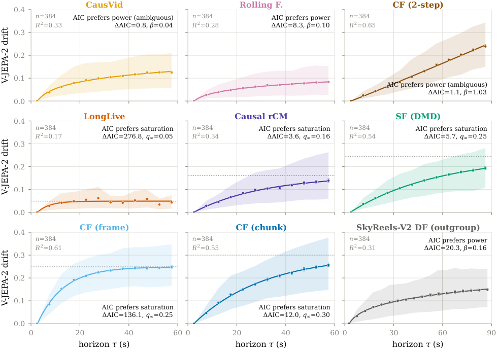
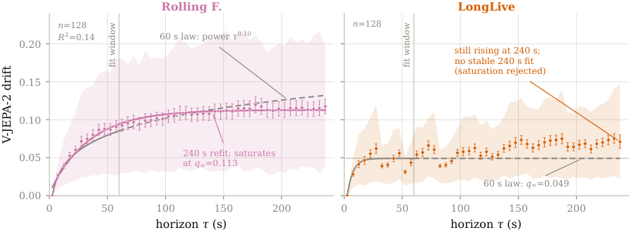
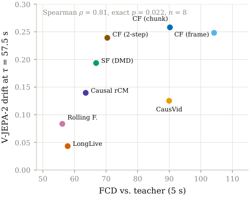
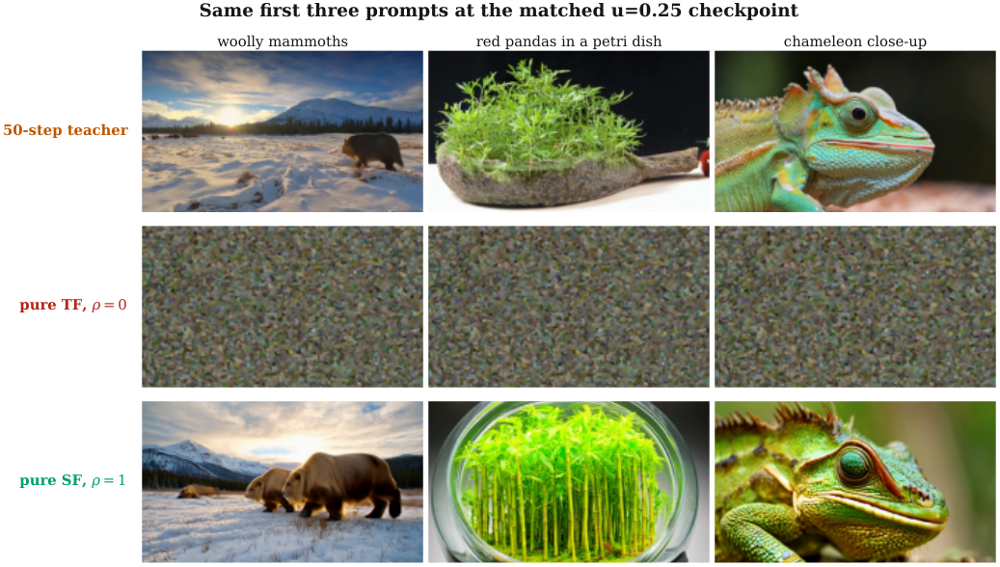
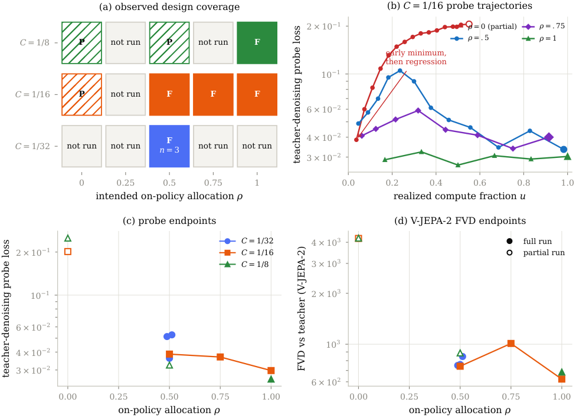
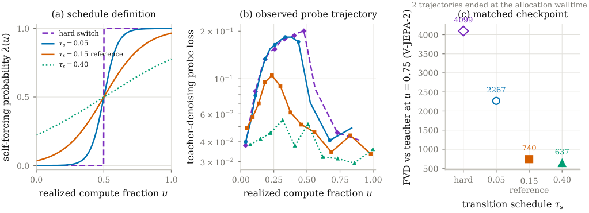

Why an atlas?
Real-time video generation now has a recognizable recipe. A bidirectional video diffusion transformer, often Wan2.1-T2V-1.3B, is distilled into a few-step causal student that produces chunks autoregressively with a KV cache. CausVid, Self Forcing, Rolling Forcing, Causal Forcing, LongLive, and causal rCM all belong to this forcing family. Reusing prior output as context is what makes the student fast. It also creates the central long-horizon failure mode: errors enter that context, compound across chunks, and gradually change the generated process.
Published demonstrations make the problem visible, but their numbers are not directly comparable. Releases use different prompt suites, horizons, segmentation rules, video encoders, metrics, batching choices, and inference stacks. A stable 30-second clip from one paper and a five-minute drift result from another cannot tell us which public checkpoint changes least, how quickly change accumulates, or whether an apparent plateau persists. Even the qualitative claim “stable” is incomplete unless it names the feature space and the window in which stability was measured.
The Drift Atlas turns those release-specific demonstrations into one controlled measurement study. It covers nine systems: eight public checkpoints derived from the same Wan teacher, plus SkyReels-V2-DF as a non-Wan outgroup. The main wave contains 3,072 in-family videos at 60 seconds. A second wave adds 256 videos at 240 seconds for the two compatible long-horizon systems. Prompts, seeds, encoder, attention backend, segmentation, and scoring stay frozen throughout. This is a quality-versus-horizon atlas, not a new generator and not a leaderboard built from self-reported numbers.

Central result. The selected drift form depends on both the representation and the observation window.
Strongest takeaway. No horizon-(H) protocol certifies behavior beyond horizon (H).
Practical implication. Report quality and stability as separate axes, and calibrate the evaluation stack before comparing absolute scores.
The protocol in brief
The frozen grid starts with 128 prompts sampled from the 1,003-prompt MovieGen video benchmark. Each 60-second checkpoint cell uses seeds 0, 1, and 2, which gives 384 videos per checkpoint. All outputs are 832 × 480 at 16 frames per second. The 240-second extension uses seed 0 for 128 LongLive videos and 128 Rolling Forcing videos. Because the same prompt and seed cells recur across checkpoints, every cross-checkpoint contrast is paired rather than a comparison between unrelated samples.
Generation also holds the systems layer fixed. Every checkpoint runs with one video encoder and the same PyTorch-native attention stack on GH200: scaled-dot-product attention on all inference paths, with FlexAttention where the vendored block-causal code uses it. No external attention package is installed in the evaluation environment. This choice makes the measured curves internally consistent. It does not make the timing results interchangeable with papers that report H100 runs or external FlashAttention.

Each video is divided into nonoverlapping 5-second segments, or 80 frames per segment. A 60-second video supplies 12 segments, and a 240-second video supplies 48. Every segment is compared with the opening segment from the same video, so the clip serves as its own reference. The primary V-JEPA-2 metric embeds each segment as a 16-frame video and measures cosine distance to segment zero. The secondary CLIP metric mean-pools image embeddings from eight uniformly spaced frames, while a color-histogram metric tracks saturation and tint changes.
For each checkpoint and metric, the analysis fits two candidate forms. Power growth is unbounded when β > 0; exponential saturation approaches a finite ceiling q∞ with time constant T:
\[ q(\tau)=q_0-b\tau^\beta, \qquad q(\tau)=q_\infty+(q_0-q_\infty)e^{-\tau/T}. \]
AIC selects between the two forms from their residual sums of squares and parameter counts. The fit is therefore a conditional model preference, not proof of an asymptotic physical law. Uncertainty is estimated with 500 prompt-block bootstrap resamples. Prompt identities are resampled with replacement, and all segments belonging to a sampled prompt move together. The reported intervals span the 5th to 95th bootstrap percentiles, giving 90% intervals without pretending that correlated segments are independent observations.
Finding 1: the drift law depends on the metric
At 60 seconds, the video-native V-JEPA-2 view does not yield a single family-wide form. AIC prefers saturation for five checkpoints and power growth for four. The power-preferred set is CausVid, Rolling Forcing, Causal Forcing 2-step, and the SkyReels-V2 outgroup. Two of those four calls are ambiguous under the conventional ΔAIC < 2 rule: Causal Forcing 2-step has a margin of 1.1, and CausVid has a margin of 0.8. The correct reading is five saturation preferences, two clearer power preferences, and two weak power calls, not four established unbounded processes.
The same videos look categorically different through an appearance representation. CLIP prefers exponential saturation for all nine checkpoints. Color histograms do the same in all nine cases. V-JEPA-2 embeds a segment as a video and responds to motion and temporal structure, whereas CLIP mean-pools image features and tracks what the frames look like. Settling appearance can therefore coexist with dynamics that continue to change.

Some individual fits sharpen the distinction. Causal Forcing 2-step grows almost linearly through the full window, with (β=1.035) and a 90% interval of ([0.97,1.10]). Rolling Forcing has a decisive 60-second power margin of 8.3. CausVid is the weakest call: its (β=0.043) interval touches zero at ([-0.01,0.09]), so the observed late-window behavior is a slow creep that the one-minute data cannot separate cleanly from slow saturation. LongLive, causal rCM, Self Forcing, and the frame and chunk Causal Forcing variants prefer saturation under both V-JEPA-2 and the appearance metrics.
Finding 2: the window flips the form call both ways
The four-minute extension is the strongest result in the Atlas because it tests the one-minute interpretation directly. LongLive and Rolling Forcing have the two lowest drift levels at 60 seconds, and both were designed for long-horizon operation. Yet extending each system to 240 seconds reverses one form preference in each direction.
LongLive’s 60-second plateau is rejected at 240 seconds. Under V-JEPA-2, drift reaches 0.071 at (τ=237.5) seconds. That is 45% above the 0.049 ceiling implied by its own 60-second fit, and the curve is still rising at the edge. AIC favors power over saturation by 67 points. The power refit is parameter-degenerate, approaching a near-logarithmic limit with bootstrap intervals spanning orders of magnitude, so the study reports that saturation is rejected without quoting a new exponent.
Rolling Forcing flips the other way. Its 60-second V-JEPA-2 fit selected power growth with β = 0.103. At 240 seconds, the data select saturation at q∞ = 0.113, with a 90% interval of [0.104, 0.122], and T = 34.0 seconds, with an interval of [27, 44]. The short-window power extrapolation predicts 0.132 at 237.5 seconds, 11% above the measured 0.117.

The appearance view mirrors the warning. LongLive changes from 60-second CLIP saturation to 240-second power growth, with (β=0.36) and a 90% interval of ([0.20,0.52]). Rolling Forcing remains saturating under CLIP, although its ceiling rises from 0.138 to 0.157 and the one-minute fit underpredicts measured edge drift by 18%. A short window can manufacture a plateau, as it did for LongLive, and it can manufacture unbounded growth, as it did for Rolling Forcing. The general statement is deliberately bounded: no horizon-(H) protocol certifies behavior beyond horizon (H).
Finding 3: quality and stability are two axes
Drift measures self-consistency over time, not fidelity. A system can produce uniformly poor video and change very little. To separate those ideas, the Atlas pairs long-horizon V-JEPA-2 drift with a short-horizon quality axis: Frechet CLIP distance between each checkpoint’s 384 Atlas videos and 384 teacher reference clips generated on the identical prompt grid. Lower is better on both axes.
The association is strong but does not preserve the checkpoint ranking. Across the eight in-family checkpoints, teacher distance and V-JEPA-2 drift at 57.5 seconds have Spearman (ρ=0.81), exact permutation (p=0.022), and (n=8). In general, checkpoints farther from the teacher at five seconds also drift farther by one minute. The exceptions explain why both coordinates are necessary.

CausVid has the third-lowest window-edge drift, 0.125, but near-worst teacher distance, 90.0. It is stable around an output distribution far from the teacher. Rolling Forcing shows that the two objectives need not trade off: it has the best teacher distance, 56.2, at the second-lowest drift, 0.084. Causal Forcing 2-step presents a different trap. Its mid-pack teacher distance of 70.4 and window-edge drift of 0.239 look ordinary at 60 seconds, but its near-linear drift continues growing while the saturation-preferred checkpoints have leveled. A single score at either horizon hides these distinctions.
A bounded distillation post-training study
A separate low-compute study asks how teacher-forcing and self-forcing branches behave during distillation post-training. It is intentionally descriptive. Teacher forcing regresses the student toward a teacher ODE trajectory while conditioning on clean teacher history. Self forcing rolls out the causal student on its own history and applies distribution feedback from the frozen teacher and critic. Only self forcing exposes the student to the history distribution it will see at inference.
At the two observed budgets where both extremes are available, completed pure self-forcing runs finish with probe loss from 0.026 to 0.030 and V-JEPA-2 FVD from 622 to 685. Retained partial pure teacher-forcing checkpoints finish with probe loss from 0.20 to 0.25 and FVD near 4,200. These are checkpoint contrasts, not isolated causal effects, because the design is sparse and some runs are partial.

The pure teacher-forcing trajectories also show an early minimum followed by regression. Probe loss reaches 0.0385 at (C=1/16) and 0.0292 at (C=1/8), then degrades to 0.2015 and 0.2502. The large final FVD values agree with those degraded endpoints. The evidence therefore supports late-training regression or instability under pure teacher forcing. It does not show that the student never entered a useful regime, and it does not establish that an earlier transition would solve the problem.

One matched schedule rung holds (C=1/16) and intended self-forcing share (ρ=0.5) fixed, then evaluates four transition schedules at (u=0.75). The widest tested transition is descriptively preferred in the probe trajectory and held-out V-JEPA-2 FVD at this rung. Two trajectories are bounded partials and the comparison has one training seed. It supplies no general schedule relationship.

The plain conclusion is more important than the favorable cells: this study identified no allocation relationship, schedule relationship, compute-optimal curve, or saturation behavior. Every allocation fit supported by only two distinct budgets is classified as descriptive_unvalidated. There is no completed held-out budget with both an observation and a frozen prediction. This is a bounded distillation post-training record, not a training law.
Eval gotchas: calibrate before you trust VBench
VBench reports multiple per-dimension scores and combines them into Quality, Semantic, and Total aggregates. Those headline numbers depend on more than the generated pixel arrays. Before comparing a local evaluation with a published table, calibrate generation, encoding, scoring, and aggregation end to end against a checkpoint whose authors reported the same official protocol.
Encoder settings alone can move aesthetic quality by about three points on bit-identical pixels. In a controlled test, 500 videos were encoded twice from the same pixel data. One copy used imageio x264 at quality 8; the other used ffmpeg at CRF 23. Under identical VBench settings, aesthetic_quality moved from 0.7506 to 0.7803, an approximately 3.0-point swing caused by compression settings alone. By comparison, imaging_quality moved by only 0.005 and subject_consistency by 0.0001. An encoder mismatch can therefore exceed many reported between-method gaps on the aesthetic dimension.
Raw dimension averages are not VBench totals. A first pass that averaged raw per-dimension scores produced Quality 86.51, apparently 1.44 points above the published Self Forcing value of 85.07. That discrepancy was an aggregation artifact. The official pipeline min-max normalizes every dimension with fixed constants, then applies dimension weights. Its final aggregate is
\[ \mathrm{Total}=\frac{4\cdot\mathrm{Quality}+\mathrm{Semantic}}{5}. \]
Reapplying the official recipe yields Quality 85.37, Semantic 81.01, and Total 84.50, compared with the self-reported 85.07, 81.28, and 84.31. All three differences are at most 0.30 points. The raw averages were never valid published aggregates. Always reproduce the official normalization and weights before comparing totals.
Expect cross-lab scatter around 0.6 points even for the same checkpoint. Independent Causal Forcing and causal rCM remeasurements place the Self Forcing total at 83.74 and 83.76, roughly 0.6 below the self-reported 84.31. The calibrated local total is 0.19 above it. The defensible practice is one fixed encoder for every video in a measured comparison, published values labeled as self-reported, and fitted quantities drawn only from a unified local remeasurement.
What we could not establish
At a few hundred GPU-node-hours, cross-budget validation of an allocation law was not feasible for the bounded distillation post-training campaign. The observed allocation fits cover only two distinct budgets inside the replicated slice. Within-run probe points are serial observations, not independent runs, and the record contains no completed held-out budget with both an observation and a frozen prediction. Partial runs and missing cells stay explicit because hiding them would make the evidence look stronger than it is.
A genuine predictive law study would need a preregistered form, one allocation observed through at least three distinct completed compute budgets, and independent training seeds across rungs. It would then freeze a prediction before evaluating a prospectively held-out budget. Enough allocation slices would also be needed to separate allocation effects from budget effects. Until that design is complete, endpoint gaps and teacher-forcing regression are observations. They are not an allocation law or schedule law.
The Atlas itself has boundaries too. Its drift axes are automated embedding distances without a human study. The eight in-family checkpoints share one teacher at one scale and resolution, and only two inference paths support the 240-second wave. AIC preferences describe the measured data and candidate forms; they do not prove the true asymptotic process. The training scope is distillation post-training only. Reward-based reinforcement learning, preference optimization, and instruction-style finetuning are outside the study.
Reproduce it
The generation, scoring, fitting, and provenance code is available in the Drift Atlas GitHub repository. The full paper will be linked here when its public record is available: TODO-arxiv-link.
The safest summary to carry into another evaluation is simple. Freeze the prompt, seed, encoder, backend, segmentation, and scoring grid. Compare bounded and unbounded forms with uncertainty. Extend the window before calling a plateau. Report short-horizon fidelity and long-horizon stability separately. Finally, treat a sparse distillation post-training grid as descriptive until it survives prospective cross-budget prediction.